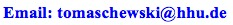

AdresseJanus TomaschewskiSystemingenieur Heinrich-Heine-Universität Düsseldorf Institut für Informatik Universitätsstraße 1 D-40225 Düsseldorf Gebäude: 25.13 Ebene: 02 Raum: 32
|
Ich bin zu erreichen (8-16Uhr) im Institut für Informatik in Raum 25.13.02.32.
|  |